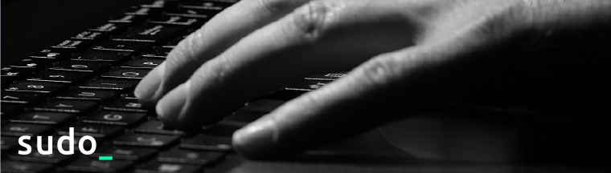
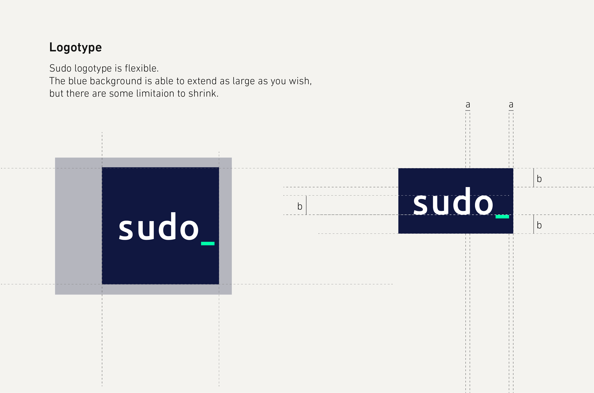

Sudo Recruit C.I.
- Date: Nov. 2014
- Design: Sheng Pan

Sudo，又稱 substitute user do 或是 superuser do。 Sudo 是一種程式，用於類Unix作業系統如BSD，Mac OS X，以及GNU/Linux以允許使用者透過安全的方式使用特殊的權限執行程式。 Sudo Recruit 專注於建構工程師社群，Sudo 受到電腦終端機、文字編輯器的啟發，將此元素與 Ubuntu 字型結合，塑造出深色藍底的企業識別；因程式的起源正是編輯器與終端機的游標，因此以螢光綠色強調終端機上的游標，強調工程師的無限價值。

